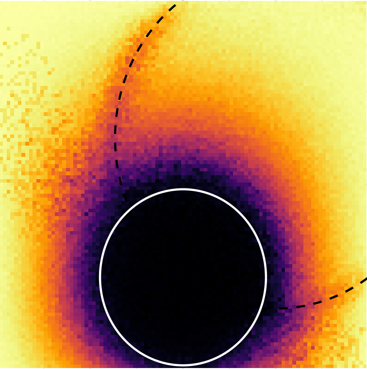

Research
My research addresses computational, mathematical, and statistical problems in the study of complex systems. My interests include network data science, dynamical models of social structures, and data science applications supporting equity and sustainability.
Methods of Network Data Science
How do we analyze and learn from network data? I build mathematical foundations for network data science algorithms, with recent focus on networks of higher-order interactions. Much of my work is devoted to developing novel random graph models and applying them in algorithms. Doing so often requires tools from probability, optimization, combinatorics, and random matrix theory.
|

Nonbacktracking spectral clustering of nonuniform hypergraphs
PSC, Nicole Eikmeier, and Jamie Haddock arXiv:2204.13586 (2022) |

Generative hypergraph clustering: from blockmodels to modularity
PSC, Nate Veldt, and Austin Benson Science Advances (2021) |

|

Moments of uniformly random multigraphs with fixed degree sequences
PSC SIAM Journal on Mathematics of Data Science (2020) |

|
Models of Polarization, Hierarchy, and Inequality
Human and animal societies are structured by persistent hierarchies, inequalities, and divisions. Dynamical and statistical models can help us understand the extent of these structures, how they form, and under what conditions they persist. I am especially interested in the role of social feedback loops in reinforcing these structures.

Emergence of hierarchy in networked endorsement dynamics
Mari Kawakatsu, PSC, Nicole Eikmeier, and Dan Larremore Proceedings of the National Academy of Sciences (2021) |

Local symmetry and global structure in adaptive voter models
PSC and Peter Mucha SIAM Journal on Applied Mathematics (2021) |
Data Science and Social Responsibility
I also use my skills and resources in the service of equity, sustainability, and justice. My efforts here includes both the development of novel methods for social data analysis and work on activist data science projects. I pursue some of this work as a Partner at QSIDE, the Institute for the Quantitative Study of Inclusion, Diversity, and Equity.
|
Persons charged with violations of 21 U.S.C. §846: Poverty, unemployment, education, and sentences.
PSC, Manuchehr Aminian, Carlos Paniagua, and Jude Higdon Part of an amicus brief in Rodriguez-Rivera v. United States, U.S. Supreme Court case 21-143 (2021) |

Space-based observational constraints on NO₂ air pollution inequality from diesel traffic in major U.S. cities
Mary Angelique Demetillo, Colin Harkins, Brian McDonald, PSC, Kang Sun, and Sally Pusede Geophysics Review Letters (2021) |

Structure and information in spatial segregation
PSC Proceedings of the National Academy of Sciences (2017) |
Key Collaborators
- Nicole Eikmeier (Computer Science, Grinnell)
- Jamie Haddock (Mathematics, Harvey Mudd)
- Heather Zinn Brooks (Mathematics, Harvey Mudd)
- Kelly Finn (Psychology and Brain Sciences, Dartmouth)
- Mason Porter (Mathematics, UCLA)
- Alice Schwarze (Mathematics, Dartmouth)
- Nate Veldt (Computer Science, Texas A&M)
- Austin Benson (Computer Science, Cornell)
- Mari Kawakatsu (Applied and Computational Mathematics, Princeton)
- Dan Larremore (Computer Science, CU Boulder)
- Peter Mucha (Mathematics, Dartmouth)
- Marta González (City and Regional Planning, UC Berkeley)
- Andrew Mellor (Oxford, OxFORD Asset Management)
- Shan Jiang (Urban and Environmental Policy and Planning, Tufts)
- Mary Angelique Demetillo (Environmental Science, UVA)
- Sally Pusede (Environmental Science, UVA).
Student Research
I love working with student collaborators! If you’re interested in doing research with me, please read more here.
Other Work
The research on this page is the best description of my current interests and activities. For my complete research record, see my Google Scholar page.